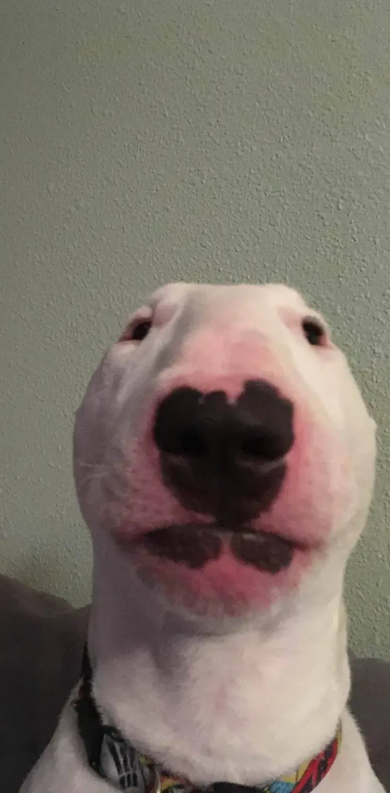

Andrew John-Paul Dong

Summary
Concept artist, Animator and aspiring Web Developer with a passion for people
Experience
Titan Forge Miniatures, Remote/Contract - Concept Artist
March 2023 - Present
- Iterated a vast array of diverse sketches based on a prompt for the modeling team to choose from
- Worked closely with Art director to get desired final result
- Took regular feedback and constructive criticism to bring more value to both team and self
Expresso Evergreen - Barista
October 2022 - April 2023
- Forged genuine relationships with customers and co-workers
- Maintained a positive and friendly attitude throughout the workday to promote a healthy working environment
- Sustained efficient, quality work under stressful conditions
Education
Schoolism, Online — Various studies
December 2019 - Present
- Creature design/Anatomy w Terryl Whitlatch
- Fundamentals of Lighting w Sam Neilson
- Digital Painting w Craig Mullins
- Character Design and Costuming for Games w Alexandria Neonakis
- Understanding Textures w Jonathan Hardesty
- Foolproof Concept Painting w Airi Pan
Proko, Online — Human Anatomy
December 2020 - June 2021
- Full body studies of the human muscle system
- Detailed classes that cover Muscles, Tendons, And bones with their functions
- Professional Artistic feedback on studies
Warren Tech - Computer science and Computer information systems
September 2018 - June 2019
- Built various peices of hardware of computers
- Made computer programs in C, Python, HTML, and CSS
- Long term team based projects
Skills
- Digital Painting: ⭐ ⭐ ⭐ ⭐ ⭐
- Conceptual Design: ⭐ ⭐ ⭐ ⭐ ⭐
- 2D animation: ⭐ ⭐
- HTML:⭐ ⭐
- C: ⭐ ⭐ ⭐
Other
Check out my Art!
About me